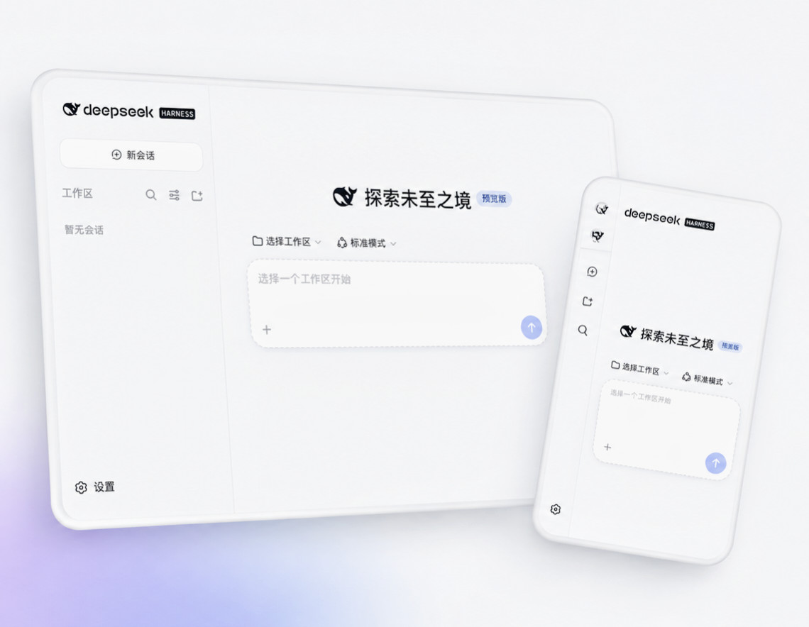
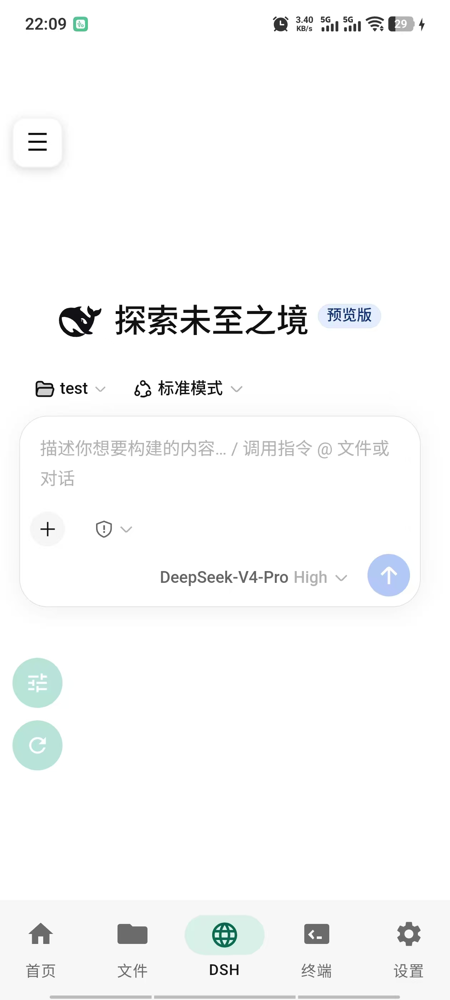
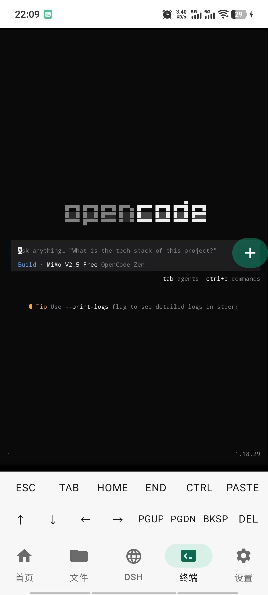
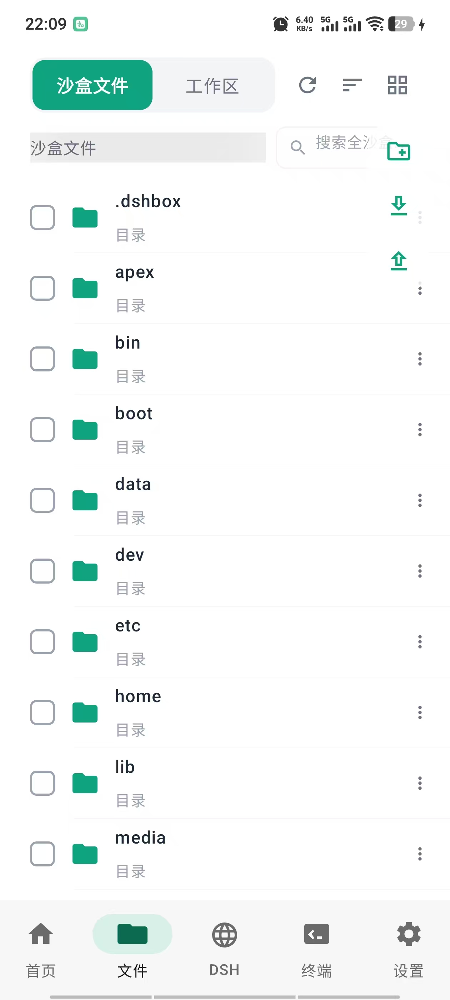
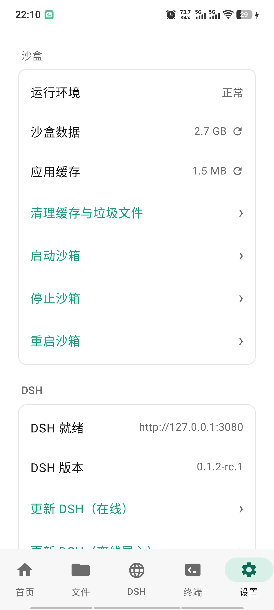

Full DSH Runtime完整 DSH 运行时
Run the complete DeepSeek Harness natively on Android — sessions, agents and tool calls, all on-device. 在 Android 本机运行完整 DeepSeek Harness——会话、Agent 与工具调用，全部在设备上完成。
Open source · GPL-3.0 · Community project 开源 · GPL-3.0 · 社区项目
The Android mobile client for DeepSeek Harness (DSH) — run the full harness completely on-device, on phones and tablets. DeepSeek Harness（DSH）的安卓移动端——在手机与平板上完全本地化、完整运行 DSH。
One APK with Debian, Node.js, DSH, PRoot, and WebView. No root or separate Termux installation required. 一个 APK 内置 Debian、Node.js、DSH、PRoot 与 WebView。无需 Root，无需单独安装 Termux。
Checking the latest release… 正在获取最新版本…

Features核心功能
DSHBox bundles the complete toolchain, so the whole DeepSeek Harness workflow fits in your pocket. DSHBox 打包了全部依赖，完整的 DeepSeek Harness 工作流直接装进口袋。
Run the complete DeepSeek Harness natively on Android — sessions, agents and tool calls, all on-device. 在 Android 本机运行完整 DeepSeek Harness——会话、Agent 与工具调用，全部在设备上完成。
PRoot provides a root-free Debian user-space environment. Your device stays unmodified. PRoot 提供免 Root 的 Debian 用户态环境，不改动你的系统。
The APK ships the environment it needs. Install one app — no Termux setup, no manual provisioning. APK 内置所需环境，装一个 App 即可，无需 Termux 配置。
Tested on real Android phones and tablets, from compact screens to large landscape displays. 已在真实 Android 手机与平板上测试，小屏到大屏横屏均适配。
A built-in WebView talks to the local DSH web server at 127.0.0.1:3080 — and the system browser works too.
内置 WebView 连接本地 DSH 服务 127.0.0.1:3080，也支持系统浏览器打开。
Browse workspaces with the built-in file manager and drive everything from a persistent terminal. 内置文件管理器浏览工作区，持久终端驱动一切操作。
Sessions, files and the web server all live on your device. Nothing is uploaded by DSHBox itself. 会话、文件与 Web 服务都在你的设备上，DSHBox 自身不上传任何数据。
GPL-3.0 licensed, 172 unit tests across 8 Gradle modules. Audit it, build it, fork it. GPL-3.0 协议，8 个 Gradle 模块、172 个单元测试。可审计、可构建、可复用。
Screenshots产品截图
Real captures from a running device — the WebUI, terminal, file manager and settings. 真机实拍画面——WebUI、终端、文件管理器与设置。




How It Works工作原理
Five layers, all on your device. 五层结构，全部在你的设备上完成。
DSHBox starts and manages the whole environment.DSHBox 启动并管理整个环境。
A user-space Debian distribution, no root required.用户态 Debian 发行版，无需 Root。
DSH runs inside the bundled Node.js runtime.DSH 运行在内置 Node.js 之上。
The Harness serves its WebUI on 127.0.0.1:3080.Harness 在 127.0.0.1:3080 提供 WebUI。
You interact through the app or any local browser.通过 App 或任意本地浏览器交互。
Requirements系统要求
Measured on a recent release build. 基于近期 Release 构建实测数据。
The button below always resolves to the latest APK from GitHub Releases. If the API is unreachable, you can still download manually from the Releases page. 下方按钮始终解析 GitHub Releases 上的最新 APK。若 API 加载失败，仍可通过 Release 页面手动下载。
Checking the latest release… 正在获取最新版本…
FAQ常见问题
Common questions about running DSH on Android. 关于在 Android 上运行 DSH 的常见问题。
No. DSHBox uses PRoot to provide a Debian user-space environment without rooting your device. 不需要。DSHBox 使用 PRoot 提供免 Root 的 Debian 用户态环境。
No. The APK bundles everything it needs — Debian, Node.js, DSH and PRoot. There is no Termux dependency. 不需要。APK 内置 Debian、Node.js、DSH 与 PRoot，完全不依赖 Termux。
Yes. DSHBox has been tested on Android phones and tablets, and the WebUI adapts to larger screens. 支持。DSHBox 已在手机与平板上测试，WebUI 会自动适配大屏。
No. The current build targets ARM64 devices only. 不支持。当前构建仅面向 ARM64 设备。
No. DSHBox is Android-only. iOS does not allow the kind of local runtime environment DSHBox relies on. 没有。DSHBox 仅支持 Android，iOS 不允许此类本地运行时环境。
All sessions, workspaces and the local web server live inside the app's private storage on your device. DSHBox does not upload your data anywhere by itself. 所有会话、工作区和本地 Web 服务都在 App 私有存储中。DSHBox 不会自行上传你的数据。
DSHBox ships a pinned, tested DSH version (currently 0.1.1-rc.2). Updates arrive with new DSHBox releases — check the Releases page for details. DSHBox 内置经过测试的固定 DSH 版本（当前为 0.1.1-rc.2），随 DSHBox 新版本一起更新，详情见 Releases 页面。
Use the built-in file manager or your device's file transfer tools to copy the workspace directories out of DSHBox's storage. Keep regular copies before upgrading. 使用内置文件管理器或系统文件传输工具，把工作区目录复制到 DSHBox 存储之外；升级前请保留副本。
No. PRoot provides a user-space Linux environment, not a kernel-level sandbox. Do not use it to run untrusted code. 不是。PRoot 提供的是用户态 Linux 环境，不是内核级沙箱，请勿用它运行不受信任的代码。
No. DSHBox is an independent open-source community project for DeepSeek Harness. It is not affiliated with or endorsed by DeepSeek. 不是。DSHBox 是面向 DeepSeek Harness 的独立开源社区项目，与 DeepSeek 无隶属或背书关系。
DSH is short for DeepSeek Harness. DSHBox is the Android/mobile client for DSH — sometimes written as dsh-android or dsh-mobile — and runs the full DeepSeek Harness locally on your phone or tablet from a single APK. DSH 是 DeepSeek Harness 的简称。DSHBox 就是 DSH 的安卓/移动端客户端，有时也写作 dsh-android 或 dsh-mobile——只需一个 APK，即可在手机或平板上本地完整运行 DeepSeek Harness。